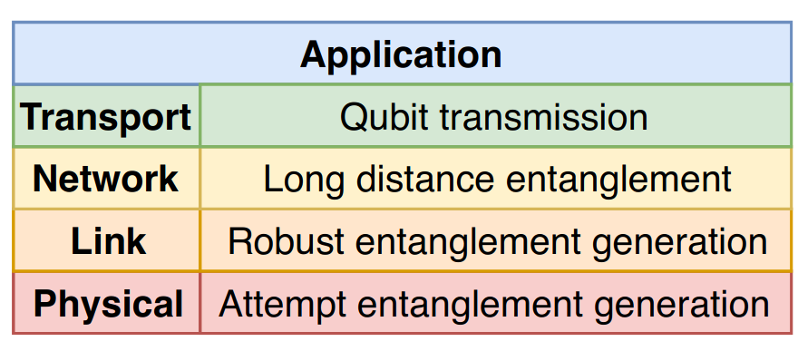

A simple link layer protocol
In this example we will look at achieving robust entanglement generation by defining a simple quantum link layer protocol. This example is inspired by the quantum link layer proposed by Dahlberg et al. In this paper the following quantum network stack is defined in analogy to the classical OSI stack:
{kind=link}
The bottom or physical layer is responsible for executing entanglement generation attempts when requested. These attempts can succeed or fail, and this information is propagated to the link layer, which is responsible for generating this entanglement in a robust manner. The link layer receives requests from the network layer to create entanglement and will respond with success once this is achieved.
In this example will be explore simplified implementations for the physical and link layer protocols. Before we dive into the protocols let us describe an example physical network in NetSquid, which will have the following layout:

Alice and Bob will use a single-click scheme to generate heralded entanglement (see paper). The quantum and classical channels and the detector required to generate the entanglement are contained within a heralded connection. We will request the entanglement generator at Alice, who will use the classical connection to synchronize the requests with Bob. A node contains a Quantum Processor which is connected to the heralded connection.
{kind=link}
The network is setup as follows:
def create_example_network(num_qubits=3):
"""Create the example network.
Alice and Bob need a QuantumProcessor to store the qubits they produce.
Their qubits are send through a heralded connection,
which needs to be connected to Alice and Bob.
It is assumed qubits are send to the connection,
and it returns classical messages.
In this example we won't use noise on the quantum memories,
so instead of defining PhysicalInstructions we
fallback to nonphysical ones.
In order to synchronize their attempts a classical connection is added.
Parameters
----------
num_qubits : int
The number of entangled qubit pairs we expect this network to make. Default 3.
Returns
-------
:class:`~netsquid.nodes.network.Network`
The example network for a simple link.
"""
network = Network('SimpleLinkNetwork')
nodes = network.add_nodes(['Alice', 'Bob'])
distance = 2 # in km
for node in nodes:
node.add_subcomponent(QuantumProcessor(f'qmem_{node.name}',
num_positions=num_qubits + 1,
fallback_to_nonphysical=True))
conn = HeraldedConnection("HeraldedConnection", length_to_a=distance / 2,
length_to_b=distance / 2, time_window=20)
network.add_connection(nodes[0], nodes[1], connection=conn, label='quantum')
network.add_connection(nodes[0], nodes[1], delay=distance / 200000 * 1e9, label='classical')
return network
Let us now define the needed protocols. The physical layer and the link layer work together very closely, therefore we will give a full overview of both protocols first, before diving into their implementation.
The link layer should respond to CREATE requests, which are issued from the network layer. A CREATE request specifies in our case the number of qubits pairs we want to generate. For this example we assume the request to generate three qubits just arrived at Alice. The protocol works as follows:
The link layer receives the request from the network layer.
The request is synchronized with the other node.
Every 100 ns the physical layer sends a trigger to the link layer.
On the trigger from the physical layer the link layer responds with the first queued request.
The link layers send a response to their physical layer with instructions.
The physical layer protocols create a qubit-photon pair using their quantum processors and send the photon to the heralded connection.
When both photons arrive at the detector of the heralded connection, they are measured.
The heralded connection informs the physical layer of the measurement outcome.
The measurement outcome is propagated to the link layer, which can now decide to send a response to the network layer.
Repeat step 5-9 until the desired number of pairs is created.
The physical layer we implement using the MidpointHeraldingProtocol (MHP) protocol, whereas
the link layer is implemented using an EGProtocol, where EG is an acronym for entanglement generation.
The MHP should trigger the EGP on a fixed timer, and start
the entanglement generation process on a response from the EGP.
This is implemented as shown below:
class MidpointHeraldingProtocol(NodeProtocol):
"""Attempt to generate entanglement via a HeraldingConnection.
This protocol sends a trigger to an EGProtocol every ``time_step`` nanoseconds.
On a response the protocol creates a qubit in memory, entangles it with a photon,
and sends this photon to the qout port of the quantum memory.
This port is expected to forward the photon to the heralded connection.
This connection is expected to return an outcome of the photon measurement,
which returns 1 or 2 (each denotes an entangled state) for success.
The photon will be generated on position 0, and the qubits on 1 .. N.
Parameters
----------
node : `~netsquid.nodes.node.Node`
The node this protocol runs on.
time_step : int
The period of the triggers in nanoseconds.
q_port_name : str
The name of the port connected to the heraled connection.
Attributes
----------
trigger_label : str
The label of the trigger signal
answer_label : str
The label of the answer signal
"""
def __init__(self, node, time_step, q_port_name):
super().__init__(node=node)
self.time_step = time_step
self.node.qmemory.ports['qout'].forward_output(self.node.ports[q_port_name])
# And we will wait for an outcome on the input port
self.port_name = q_port_name
self.q_port_name = q_port_name
# We have to remember if we already send a photon
self.trigger_label = "TRIGGER"
self.answer_label = "ANSWER"
self.add_signal(self.trigger_label)
self.add_signal(self.answer_label)
self._do_task_label = 'do_task_label'
self.add_signal(self._do_task_label)
class EmitProgram(QuantumProgram):
"""Program to create a qubit and emit an entangled photon to the 'qout' port.
"""
def __init__(self):
super().__init__(num_qubits=2)
def program(self):
# Emit from q2 using q1
q1, q2 = self.get_qubit_indices(self.num_qubits)
self.apply(INSTR_INIT, q1)
self.apply(INSTR_EMIT, [q1, q2])
yield self.run()
def run(self):
"""Sends triggers periodically or starts an entanglement attempt.
The triggers are skipped during the entanglement attempt for simplicity.
Yields
------
:class:`~pydynaa.core.EventExpression`
Await a timer signal or a response from the connection.
"""
while True:
# Instead of a duration we specify the time explicitly
# to be a mulitple of the time_step.
time = (1 + (ns.sim_time() // self.time_step)) * self.time_step
wait_timer = self.await_timer(end_time=time)
wait_signal = self.await_signal(self, self._do_task_label)
evexpr = yield wait_timer | wait_signal
if evexpr.second_term.value:
# Start the entanglement attempt
qpos = self.get_signal_result(self._do_task_label)
prog = self.EmitProgram()
self.node.qmemory.execute_program(prog, qubit_mapping=[qpos + 1, 0])
port = self.node.ports[self.q_port_name]
yield self.await_port_input(port)
message = port.rx_input()
if message.meta.get("header") == 'photonoutcome':
outcome = message.items[0]
else:
outcome = 'FAIL'
self.send_signal(self.answer_label, result=(outcome, qpos + 1))
else:
self.send_signal(self.trigger_label)
def do_task(self, qpos):
"""Start the task.
Parameters
----------
qpos : int
The number indicating which qubit pair we are making.
"""
self.send_signal(self._do_task_label, result=qpos)
The EGP is defined as a service: a protocol that defines the interface the network layer can use more explicitly. We can split our protocol into two parts: handling input of requests and handling the requests themselves. We will use the service to handle the input of requests, and the actual handling of the requests will be implemented by a protocol. In an extention of this example we will reuse the service but create a new protocol. Our EGP can’t handle multiple requests at once, so we use a queue to schedule the requests. The service is implemented as shown below with an abstract request handler:
class EGService(ServiceProtocol, metaclass=abc.ABCMeta):
"""Abstract interface for an Entanglement Generation Service.
Defines the available request and response types, and implements the queue mechanism.
Every request will be assigned a unique create_id, which is
returned when a request is put to this service.
Parameters
----------
node : :class:`~netsquid.nodes.node.Node`
The node this protocol runs on.
name : str, optional
The name of this protocol. Default EGService.
Attributes
----------
req_create : namedtuple
A request to create entanglement with a remote node.
res_ok : namedtuple
A response to indicate a create request has finished.
"""
# Define the requests and responses as class attributes so
# they are identical for every EGProtocol instance
req_create = namedtuple('LinkLayerCreate', ['purpose_id', 'number'])
res_ok = namedtuple('LinkLayerOk', ['purpose_id', 'create_id', 'logical_qubit_id'])
def __init__(self, node, name=None):
super().__init__(node=node, name=name)
# Register the request and response
self.register_request(self.req_create, self.create)
self.register_response(self.res_ok)
# We will use a queue for requests
self.queue = deque()
self._new_req_signal = "New request in queue"
self.add_signal(self._new_req_signal)
self._create_id = 0
def handle_request(self, request, identifier, start_time=None, **kwargs):
"""Schedule the request on the queue.
Schedule the request in a queue and
signal to :meth:`~netsquid.examples.simple_link.EGProtocol.run`
new items have been put into the queue.
Parameters
----------
request :
The object representing the request.
identifier : str
The identifier for this request.
start_time : float, optional
The time at which the request can be executed. Default current simulation time.
kwargs : dict, optional
Additional arguments which can be set by the service.
Returns
-------
dict
The dictionary with additional arguments.
Notes
-----
This method is called after
:meth:`~netsquid.protocols.serviceprotocol.ServiceProtocol.put` which
does the type checking etc.
"""
if start_time is None:
start_time = ns.sim_time()
self.queue.append((start_time, (identifier, request, kwargs)))
self.send_signal(self._new_req_signal)
return kwargs
def run(self):
"""Wait for a new request signal, then run the requests one by one.
Assumes request handlers are generators and not functions.
"""
while True:
yield self.await_signal(self, self._new_req_signal)
while len(self.queue) > 0:
start_time, (handler_id, request, kwargs) = self.queue.popleft()
if start_time > ns.sim_time():
yield self.await_timer(end_time=start_time)
func = self.request_handlers[handler_id]
args = request._asdict()
gen = func(**{**args, **kwargs})
yield from gen
def _get_next_create_id(self):
# Return a unique create id.
self._create_id += 1
return self._create_id
@abc.abstractmethod
def create(self, purpose_id, number, create_id, **kwargs):
"""Implement the entanglement generation.
Parameters
----------
purpose_id : int
Integer representing which purpose this entanglement is for.
Used to communicate to the higher layers.
number : int
Number of qubit pairs to make.
create_id : int
The unique identifier provided by the service.
kwargs : dict, optional
Drain for any optional parameters.
"""
pass
The synchronization and request handling can now be defined in the protocol:
class EGProtocol(EGService):
"""Implement an Entanglement Generation service.
Upon a *LinkLayerCreate* request generates pairs of entangled qubits, of which one
is locally stored and the other is stored at the remote node.
Requests are fulfulled in FIFO order, and upon completion
a response signal is sent.
Parameters
----------
node : :class:`~netsquid.nodes.node.Node`
The node this protocol runs on.
c_port_name : str
The name of the port which is connected to the remote node.
name : str, optional
The name of this protocol. Default EGProtocol.
"""
def __init__(self, node, c_port_name, name=None):
super().__init__(node=node, name=name)
# Require a Physical Layer protocol
self._mh_name = "MH_Protocol"
# Setup queue synchronization
self.c_port = self.node.ports[c_port_name]
self.c_port.bind_input_handler(self._handle_msg)
def add_phys_layer(self, mh_protocol):
"""Add a physical layer protocol as a subprotocol.
Parameters
----------
mh_protocol :
The protocol which implements a physical layer.
"""
self.add_subprotocol(mh_protocol, name=self._mh_name)
def handle_request(self, request, identifier, start_time=None, **kwargs):
"""Synchronize the request with the other service and schedule it on the queue.
Parameters
----------
request :
The object representing the request.
identifier : str
The identifier for this request.
start_time : float, optional
The time at which the request can be executed. Default current time.
kwargs : dict, optional
Additional arguments not part of the original request.
Returns
-------
dict
The dictionary with additional arguments.
For the create request this is the unique create id.
"""
if kwargs.get('create_id') is None:
kwargs['create_id'] = self._get_next_create_id()
if start_time is None:
travel_time = 10000
start_time = ns.sim_time() + travel_time
# Make sure Message don't combine by specifying a header.
self.c_port.tx_output(
Message([request, identifier, start_time, kwargs], header=request)
)
return super().handle_request(request, identifier, start_time, **kwargs)
def _handle_msg(self, msg):
"""Handle incoming messages from the other service.
The services use these messages to ensure they start
the same request at the same time.
Parameters
----------
msg : Message
A Message from another ServiceProtocol containing request
and scheduling data.
"""
request, handler_id, start_time, kwargs = msg.items
self.handle_request(request, handler_id, start_time, **kwargs)
def run(self):
"""Make sure we have an subprotocol before running our program.
"""
if self._mh_name not in self.subprotocols or \
not isinstance(self.subprotocols[self._mh_name], Protocol):
raise ValueError("EGProtocol requires a physical layer protocol to be added.")
self.start_subprotocols()
yield from super().run()
def create(self, purpose_id, number, **kwargs):
"""Handler for create requests.
Create qubits together with a remote node.
Parameters
----------
purpose_id : int
The number used to to tag this request for a specific purpose in a higher layer.
number : int
The number of qubits to make in this request.
Yields
------
:class:`~pydynaa.core.EventExpression`
The expressions required to execute the create request.
Returns
-------
:obj:`~netsquid.examples.simple_link.EGProtocol.res_ok`
The response object indicating we successfully made the requested qubits.
"""
create_id = kwargs['create_id']
self._create_id = create_id
curpairs = 0
sub_proto = self.subprotocols[self._mh_name]
wait_trigger = self.await_signal(sub_proto, sub_proto.trigger_label)
wait_answer = self.await_signal(sub_proto, sub_proto.answer_label)
# Start the main loop
while curpairs < number:
evexpr = yield wait_trigger | wait_answer
for event in evexpr.triggered_events:
qpos = self._handle_event(event, curpairs)
if qpos is not None:
response = self.res_ok(purpose_id, create_id, qpos)
self.send_response(response)
curpairs += 1
def _handle_event(self, event, curpairs):
# Communicate with the physical layer on trigger and answers signals.
sub_proto = self.subprotocols[self._mh_name]
label, value = sub_proto.get_signal_by_event(event, receiver=self)
if label == sub_proto.trigger_label:
sub_proto.do_task(qpos=curpairs)
elif label == sub_proto.answer_label:
outcome, qpos = value
# outcome of 1 is |01>+|10>, 2 is |01>-|10>.
# Other outcomes are non-entangled states.
if outcome == 1 or outcome == 2:
return qpos
return None
We have skipped over the heralded connection, so we will address it now. The connection contains a detector in order to measure the incoming photons. In this example we have the detector in the middle of the connection.
{kind=link}
class HeraldedConnection(Connection):
"""A connection that takes in two qubits, and returns a message
how they were measured at a detector.
Either no clicks, a single click or double click, or an error
when the qubits didn't arrive within the time window.
Parameters
----------
name : str
The name of this connection
length_to_a : float
The length in km between the detector and side A. We assume a speed of 200000 km/s
length_to_b : float
The length in km between the detector and side B. We assume a speed of 200000 km/s
time_window : float, optional
The interval where qubits are still able to be measured correctly.
Must be positive. Default is 0.
"""
def __init__(self, name, length_to_a, length_to_b, time_window=0):
super().__init__(name)
delay_a = length_to_a / 200000 * 1e9
delay_b = length_to_b / 200000 * 1e9
channel_a = ClassicalChannel("ChannelA", delay=delay_a)
channel_b = ClassicalChannel("ChannelB", delay=delay_b)
qchannel_a = QuantumChannel("QChannelA", delay=delay_a)
qchannel_b = QuantumChannel("QChannelB", delay=delay_b)
# Add all channels as subcomponents
self.add_subcomponent(channel_a)
self.add_subcomponent(channel_b)
self.add_subcomponent(qchannel_a)
self.add_subcomponent(qchannel_b)
# Add midpoint detector
detector = BSMDetector("Midpoint", system_delay=time_window)
self.add_subcomponent(detector)
# Connect the ports
self.ports['A'].forward_input(qchannel_a.ports['send'])
self.ports['B'].forward_input(qchannel_b.ports['send'])
qchannel_a.ports['recv'].connect(detector.ports['qin0'])
qchannel_b.ports['recv'].connect(detector.ports['qin1'])
channel_a.ports['send'].connect(detector.ports['cout0'])
channel_b.ports['send'].connect(detector.ports['cout1'])
channel_a.ports['recv'].forward_output(self.ports['A'])
channel_b.ports['recv'].forward_output(self.ports['B'])
The main part of the heralded connection is the BSMDetector, so in the code shown below we will address it.
class BSMDetector(QuantumDetector):
"""A component that performs Bell basis measurements.
Measure two incoming qubits in the Bell basis if they
arrive within the specified measurement delay.
Only informs the connections that send a qubit of the measurement result.
"""
def __init__(self, name, system_delay=0., dead_time=0., models=None,
output_meta=None, error_on_fail=False, properties=None):
super().__init__(name, num_input_ports=2, num_output_ports=2,
meas_operators=create_meas_ops(),
system_delay=system_delay, dead_time=dead_time,
models=models, output_meta=output_meta,
error_on_fail=error_on_fail, properties=properties)
self._sender_ids = []
def preprocess_inputs(self):
"""Preprocess and capture the qubit metadata
"""
super().preprocess_inputs()
for port_name, qubit_list in self._qubits_per_port.items():
if len(qubit_list) > 0:
self._sender_ids.append(port_name[3:])
def inform(self, port_outcomes):
"""Inform the MHP of the measurement result.
We only send a result to the node that send a qubit.
If the result is empty we change the result and header.
Parameters
----------
port_outcomes : dict
A dictionary with the port names as keys
and the post-processed measurement outcomes as values
"""
for port_name, outcomes in port_outcomes.items():
if len(outcomes) == 0:
outcomes = ['TIMEOUT']
header = 'error'
else:
header = 'photonoutcome'
# Extract the ids from the port names (cout...)
if port_name[4:] in self._sender_ids:
msg = Message(outcomes, header=header, **self._meta)
self.ports[port_name].tx_output(msg)
def finish(self):
"""Clear sender ids after the measurement has finished."""
super().finish()
self._sender_ids.clear()
Together these parts allow for robust entanglement generation. We still need to setup the protocols. A mockup Network layer will send the request to the link layer at Alice. By making the EGP a subprotocol of the Network layer it will automatically stop when the Network layer has no more requests.
class NetworkProtocol(Protocol):
"""Send requests to an EG service protocol.
Will automatically stop the services and their sub-protocols
when the requests are finished.
Parameters
----------
name : str
Name to identify this protocol.
entangle_protocol : :class:`~netsquid.examples.simple_link.EGService`
The service that will get the requests from this network.
remote_entangle_protocol : :class:`~netsquid.examples.simple_link.EGService`
The service that will create the pairs together with the entangle_protocol.
"""
def __init__(self, name, entangle_protocol, remote_entangle_protocol):
super().__init__(name=name)
self.add_subprotocol(entangle_protocol, "EGP_Alice")
self.add_subprotocol(remote_entangle_protocol, "EGP_Bob")
def run(self):
"""Start the protocols and put requests to Alice."""
proto = self.subprotocols['EGP_Alice'].start()
self.subprotocols['EGP_Bob'].start()
# Start with a single request
req_1 = proto.req_create(purpose_id=4, number=3)
create_id = proto.put(req_1)['create_id']
print(f"Waiting for responses with create_id {create_id}")
yield from self.show_results(proto, req_1)
req_2 = proto.req_create(purpose_id=6, number=2)
create_id = proto.put(req_2)['create_id']
print(f"Waiting for responses with create_id {create_id}")
req_3 = proto.req_create(purpose_id=4, number=1)
create_id = proto.put(req_3)['create_id']
print(f"Waiting for responses with create_id {create_id}")
yield from self.show_results(proto, req_2)
yield from self.show_results(proto, req_3)
print('Finished all network requests')
def show_results(self, proto, request):
""" Show the qubits which are entangled as a result of the request.
Parameters
----------
proto : :class:`~netsquid.examples.simple_link.EGProtocol`
The entanglement generation service
request : :class:`~netsquid.examples.simple_link.EGService.req_create`
The request
Yields
------
:class:`~pydynaa.core.EventExpression`
The eventexpressions required to wait for the response signals.
"""
ok_signal = proto.get_name(proto.res_ok)
print(f"Qubits between Alice and Bob with purpose_id {request.purpose_id}:")
for _ in range(request.number):
yield self.await_signal(proto, ok_signal)
res = proto.get_signal_result(ok_signal, self)
qubits = proto.node.qmemory.peek(res.logical_qubit_id)[0].qstate.qubits
print(f" {ns.sim_time():8.0f}: {qubits} with create_id {res.create_id}")
Finally we put the protocols on the nodes.
def setup_protocol(network):
"""Configure the protocols.
Parameters
----------
network : :class:`~netsquid.nodes.network.Network`
The network to configure the protocols on. Should consist of two nodes
called Alice and Bob.
Returns
-------
:class:`~netsquid.protocols.protocol.Protocol`
A protocol describing the complete simple link setup.
"""
nodes = network.nodes
# Setup Alice
q_ports = network.get_connected_ports(*nodes, label='quantum')
c_ports = network.get_connected_ports(*nodes, label='classical')
alice_mhp = MidpointHeraldingProtocol(nodes['Alice'], 500, q_ports[0])
alice_egp = EGProtocol(nodes['Alice'], c_ports[0])
alice_egp.add_phys_layer(alice_mhp)
# Setup Bob
bob_mhp = MidpointHeraldingProtocol(nodes['Bob'], 470, q_ports[1])
bob_egp = EGProtocol(nodes['Bob'], c_ports[1])
bob_egp.add_phys_layer(bob_mhp)
return NetworkProtocol("SimpleLinkProtocol", alice_egp, bob_egp)
We can run our simulation by calling the following:
def run_simulation():
"""Run the example simulation.
"""
ns.sim_reset()
ns.set_random_state(42) # Set the seed so we get the same outcome
ns.set_qstate_formalism(QFormalism.DM)
network = create_example_network()
protocol = setup_protocol(network)
protocol.start()
ns.sim_run()
Which will give us the following output:
>>> from netsquid.examples.simple_link import run_simulation
>>> run_simulation()
Waiting for responses with create_id 1
Qubits between Alice and Bob with purpose_id 4:
2078020: [Qubit('QS#790-0'), Qubit('QS#791-0')] with create_id 1
7506520: [Qubit('QS#2874-0'), Qubit('QS#2875-0')] with create_id 1
18363520: [Qubit('QS#7042-0'), Qubit('QS#7043-0')] with create_id 1
Waiting for responses with create_id 2
Waiting for responses with create_id 3
Qubits between Alice and Bob with purpose_id 6:
20400020: [Qubit('QS#7820-0'), Qubit('QS#7822-0')] with create_id 2
22437010: [Qubit('QS#8604-0'), Qubit('QS#8602-0')] with create_id 2
Qubits between Alice and Bob with purpose_id 4:
25828520: [Qubit('QS#9904-0'), Qubit('QS#9906-0')] with create_id 3
Finished all network requests
We could give this Protocol much more functionality to better represent the design of the paper. For example, in the request one could specify a minimum fidelity or maximum generation time. To reach a minimum fidelity one requires some kind of entanglement distillation. Changing the bright state population of the qubit-photon pair can change the success probability, and thus change the generation time. Using entanglement swapping it is possible to create entanglement between nodes which aren’t directly connected. This process builds upon the robust entanglement generation scheme shown in this example.